Unit 6: Radioactive Decays#
As we saw in the previous unit, nuclei in excited states can emit radiation in the form of gamma rays when nucleons move between different shell levels. This explains one of our three dominant sources of radiation. What about the others, \(\beta\) and \(\alpha\) decay?
These become a bit trickier to solve, as both decays lead to a fundamental change in the nucleon content inside the nucleus itself. As a reminder, in all cases of radioactive decay, we characterize the process in terms of three important numbers:
The probability of decay per unit time \(\rightarrow \lambda\)
The average time a nucleus lasts before decay \(\rightarrow \tau = 1/\lambda\)
The time for half the sample to decay (half-life) \(\rightarrow T = \tau \textnormal{ln}(2) = 0.693\tau\)
Radioactive decay itself is a stochastic process. That is why we define it in terms of the average times it takes bulk samples of material to decay. The main thing that governs the rate of this decay in a nucleus is actually whether the process is energetically favorable or not. A nucleus is likely to be unstable and decay if the net energy of the final products \(E_{f}\) is less than that of the starting nucleus \(E_{i}\). This energy deficit is defined as: $\( Q = M(A,Z)^{2}c^{2} - [M(A-X,Z-Y)c^{2} + M(X,Y)c^{2}] > 0 \)$
Decay is possible only if the \(Q\) value is positive, and the decay is not disallowed by any other selection rule or conservation law. The energy released in the decay will come out in the kinetic energy of the fragments or in nuclear excitation followed by relaxation and \(\gamma\) ray emission.
6.1 Alpha Decay#
First, let’s start to use our newfound understanding of nuclear structure to try to understand alpha decay. There are some important questions we need to ask for this process:
Why are the \(\alpha\) particles emitted and not some other combination of nucleons?
Why is there such a range of lifetimes and energies? What is the relationship between the two?
What determines the frequency of \(\alpha\) decay?
How are the \(\alpha\) particles formed in the nucleus and emitted?
Do alphas carry information on nuclear structure?
One plot that begins to answer some of these questions is a comparison of the \(Q\) energy for different alpha-emitting particles separated by different radioactive decay series. This is called the Geiger-Nuttall relation, and it demonstrates that actually for many different series, there is a strong correlation between the radioactive half-life and the energy of the emitted alpha.
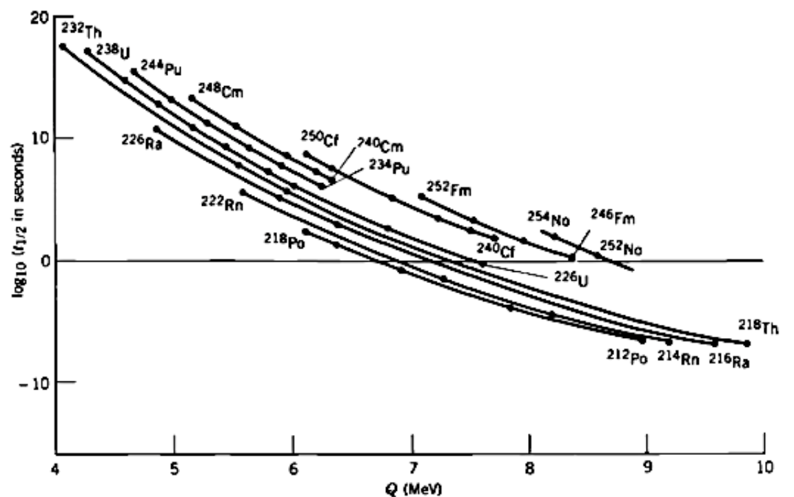
Notice also how steep the relation is in the Geiger-Nuttall plot (it’s a log scale). An alpha emitter that produces 8 MeV alpha particles is likely to have a half-life over 22 orders of magnitude shorter than one which produces alphas of 4 MeV kinetic energy. The Geiger-Nuttall relation is a fit to the observed data of the form:
where Z is the number of protons, Q is the energy released, \(b_{1}\) and \(b_{2}\) are constants. An equivalent form is:
It turns out that trying to understand why the data follows this shape leads us once again to the need for a quantum mechanical treatment of Alpha Decay. The key is the form of this observed relation, a fit to the data. To explain the relation, it turns out we need to consider that the alpha forms inside the nucleus and then escapes by Quantum Mechanical Barrier Penetration. The alpha is envisioned as a free-particle wavefunction subject to the Nuclear Potential.
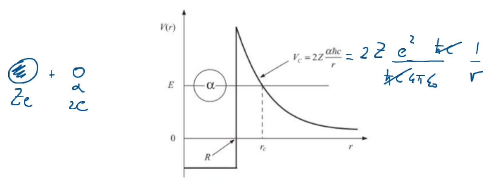
Of course, in a classical model, if the Potential Barrier is too high, the alpha never escapes. In Quantum Mechanics, we allow Tunneling with a small probability that the alpha can penetrate the barrier. Calculating the ratio of the wavefunctions inside and outside and squaring gives the probability. We can do a simple calculation of this by considering the diagram of the potential below. We assume the alpha is pre-formed in the nucleus, oscillates around, repeatedly hitting the edge inside the nucleus until at some point it escapes by Barrier Penetration.
Notice how the Potential Barrier drops as \(1/r\). Rather than try to solve this, we can make a simple approximation that the barrier has a fixed height \(U_0\) and fixed length \(L\), and that the alpha has energy \(E\), as illustrated below. Also, the potential seen by the alpha particle is spherically symmetric, and so the quantum mechanical problem can be approached by first separating the variables into just a radial component.
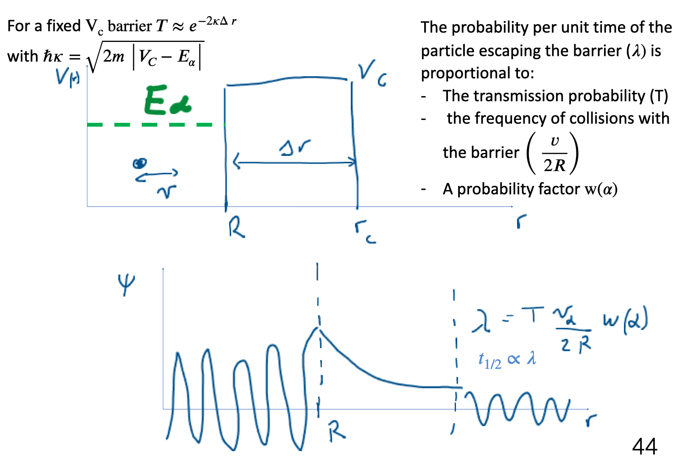
As a particle approaches the barrier, it is described by a Free Particle Wavefunction. When it reaches the barrier, it must satisfy the simplified Schrödinger Equation in the form:
Solving this QM equation of simple Barrier Penetration is beyond our scope here. What is important is the result. It gives us a value for \(X\), the probability of barrier penetration as:
where \(α = \sqrt{(2m(U_0 - E))/\hbar^2}\) is called the Gamow Factor. This is a constant we can call \(\alpha = 1\) for now to make the derivation simpler.
Now, if we assume the alpha makes contact with the barrier once every second, then the average probability that the alpha leaves (a decay takes place) and the half-life is just related to the tunneling probability by:
If the alpha hits the barrier faster than 1 Hz, then we expect the probability that it leaves the nucleus to scale upwards as well. If we can work out the frequency that the alpha hits the barrier, which will be determined by its velocity and the size of the nucleus, and we know the height of the barrier \(U_0\) and the width \(L\) and the energy of the alpha \(E\), then we can find the half-life \(T_{1/2}\). We can then see if this agrees with the Geiger-Nuttall observation from data.
The way to proceed is illustrated below, where we attempt to find the half-life of 212Po, which emits an 8.78 MeV alpha. First, we need to find the width of the barrier. For this, we need to know the Nuclear Separation \(N\), i.e., the distance between the center of the nucleus and the center of the alpha, just as it detaches itself from the nucleus. Be careful that at this point the nucleus we are talking about is not A=212, but A=208, because we have removed the alpha.
Nuclear separation = 1.2(A)^1/3 + 1.2(208)^1/3 = 9.01 fm so N = 9.01 fm
We now find the height of the barrier by applying Coulomb’s Law at the nuclear separation as illustrated here:
V U_0 Coulomb part 26.21 MeV
(2*(Z - 2)e^2)/r = (2(82-2)1.44 MeV·fm)/9.01 fm = 26.21 MeV 8.78 MeV
r
k = 1/(4πε_0) = 8.987552 x 10^9 N m^2/C^2 = Coulomb’s constant
Now the distance at which the Coulomb Potential drops to the level of energy of the observed alpha is:
So the barrier width L is:
8.78 MeV = (2(82)1.44 MeV·fm)/r; r = 26.9 fm
26.90 fm - 9.01 fm = 17.9 fm
For a given alpha, the combined Tunnelling Probability per second for emission is the product:
\( (2.47 \times 10^{-15})(1.14 \times 10^{21} s^{-1}) = 2.82 \times 10^6 s^{-1} \)
\( \lambda = \sqrt{X} \)
\( T_{1/2} = \frac{\ln 2}{\lambda} = \frac{0.693}{2.82 \times 10^6 s^{-1}} = 2.5 \times 10^{-7} s = 0.25 \mu s \)
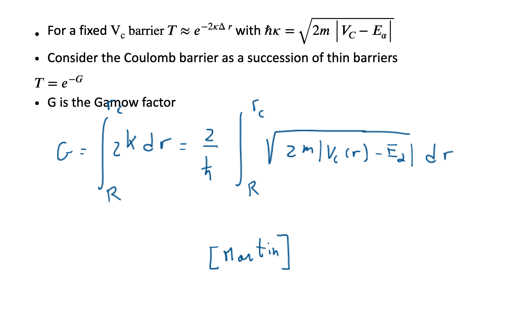 The result is quite good. But note we could do better by modelling the potential as a series of decreasing barriers as:
\( V(r) \propto \frac{1}{r} \)
\( X = X_1 \times X_2 \times X_3 \times ... \times X_n = Ae^{2\int_{R_1}^{R_2}\alpha dr} \)
In the limit as n goes to ∞, turns into an integral
Total transmission is the product of all elemental transmission factors
\( X = e^{-2\int_{R_1}^{R_2}\alpha dr} \)
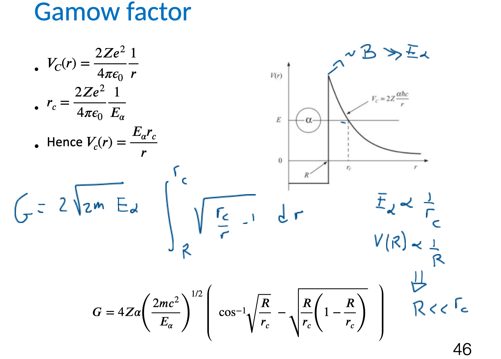
So this basic Alpha Tunnelling Model allows us to predict the relationship between alpha energy and half-life of the decay, and it nicely fits with the Geiger-Nuttall relation. We had to make some assumptions, like the nucleus being spherical etc. (which is dangerous as we have seen) but it can get us very close to the data. Here is an example plot:
\( \ln \lambda = -a'\frac{Z}{Q^{1/2}} + a_2 \)
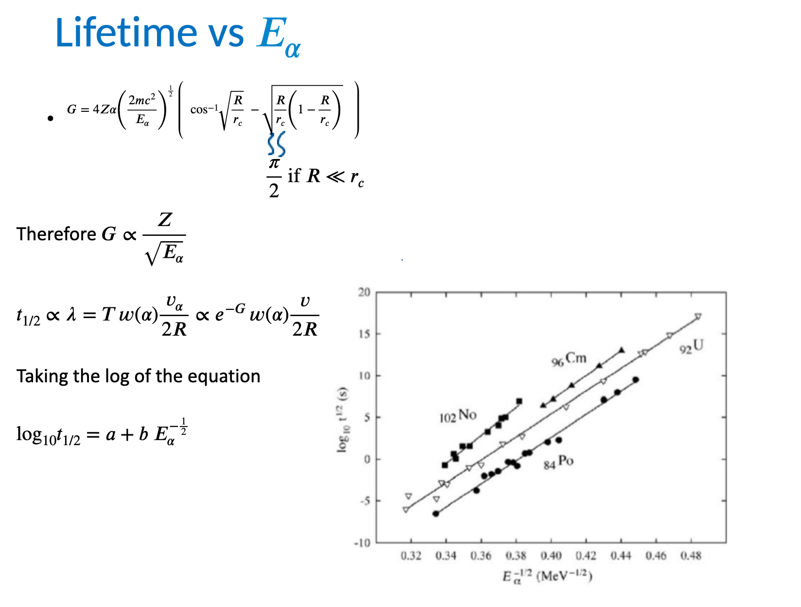
Beta Decay#
We now turn to Beta Decay. In this we get emission of an Electron from the nucleus or possibly a Positron. In the early years of Beta Decay studies the process observed was highly mysterious, very different to Alpha Decay.
This is illustrated by the Cloud Chamber image shown below. We see the decay of ^6He into ^6Li and a charged electron. We see two tracks, curving because there is a magnetic field applied. But from analysis of the plot it looks like energy, momentum and even Total Angular Momentum J are not conserved if we assume the interaction:
\( ^6He \rightarrow ^6Li + e^- \)
Of course the reason is that there is a Neutrino emitted as well, but this escapes the detector and we don’t see it. There are actually four big differences between beta decay and alpha decay, not just the neutrino.
Beta Decay is a Three-body Process, unlike alpha decay (two body). We have to account for the energies and behaviour of 3 objects - the nucleus, the beta and neutrino.
The electron (positron) and neutrino produced do not exist before the decay, we need to account for their formation.
The electron and neutrino are relativistic, unlike the alpha in alpha decay. This makes calculations of the energies and kinematics of the decay more complicated.
The energy of the beta emitted by the nucleus in question is not the same in every decay. We get a continuum of energies put to a maximum. In alpha decay we get one “Monoenergetic” value every time.
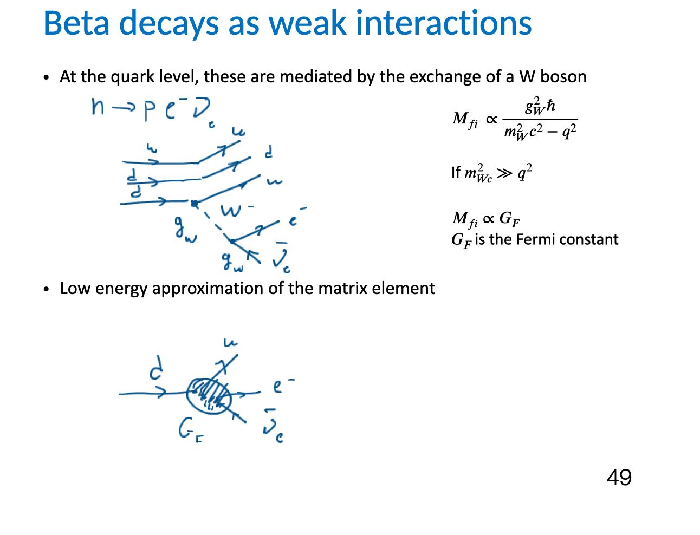
An example to illustrate this behaviour is:
Note how with an electron emitted in beta decay we get an Anti-neutrino (this is Lepton Number conservation in particle physics)
It’s important to realise that there are actually 3 types of beta decay: (1) Electron Emission, (2) Positron Emission and (3) Electron Capture or EC.
The energetics are vitally important in physics.
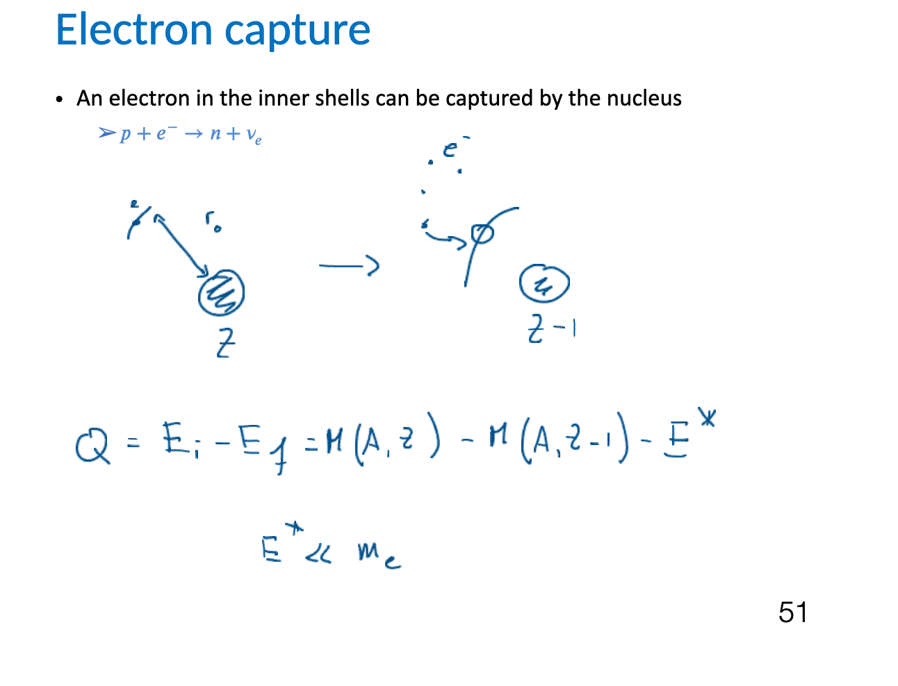
Electron emission n → p + e^- + \(\bar{\nu}_e\)#
\( Q = [M(A,Z) - M(A,Z+1) - m_e]c^2 \) so \( Q = [M(A,Z) - M(A,Z+1)]c^2 \)
Note we have to be careful in Beta Decay to consider the mass of everything including the Atomic Electrons, not just the nucleons. Hence the mass used are atomic masses, not the nuclear masses. We were less careful earlier when dealing with Binding Energy calculations and the SEMF.
The third beta decay is called Electron Capture (EC). Here the nucleus captures one of the atomic electrons. It’s a bit like positron beta decay but instead of p → n + e^+ + \(\nu_e\) we have
Electron capture (K or L capture) p + e^- → n + \(\nu_e\)
The process proceeds (Q > 0) if \( M(A,Z)c^2 \) is greater than \( M(A,Z-1)c^2 \). It strongly competes with e^+ decay and is the only decay available to nuclei with a Proton Excess if the mass difference between the atoms is less than 1 MeV/c^2.
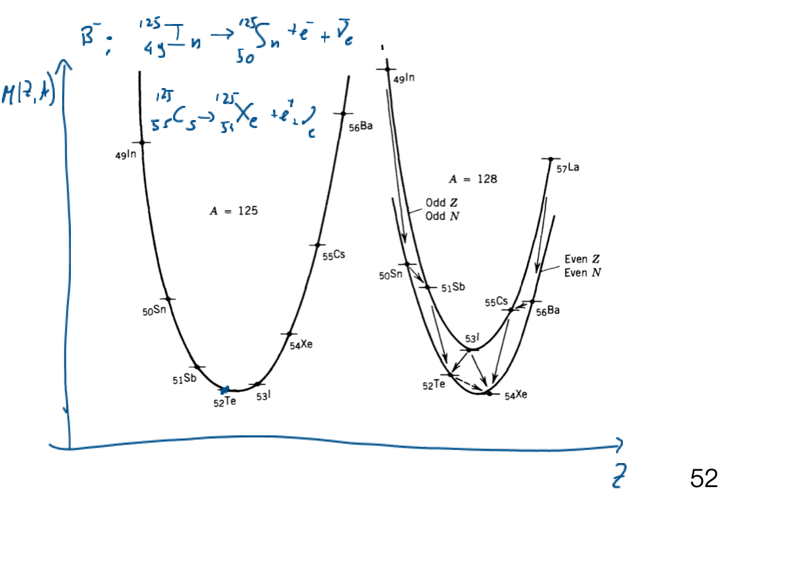
Applied Beta Physics#
As described earlier there are many applications of beta decay. Notable is Positron Emission Tomography. Patients are injected with a positron emitting isotope. The positron finds an electron and Annihilates to produce two back to back gammas that can be detected and hence used to find the location of the decay, and hence image, say, the brain. PET is an example application \( _{9}^{18}F \rightarrow _{8}^{18}O + e^+ + \)\nu_e\( \)
Often the Decay Sequence is depicted as an Energy Level Diagramme as in this example:
For beta decay we should have a diagram showing how the shell orbitals can change.
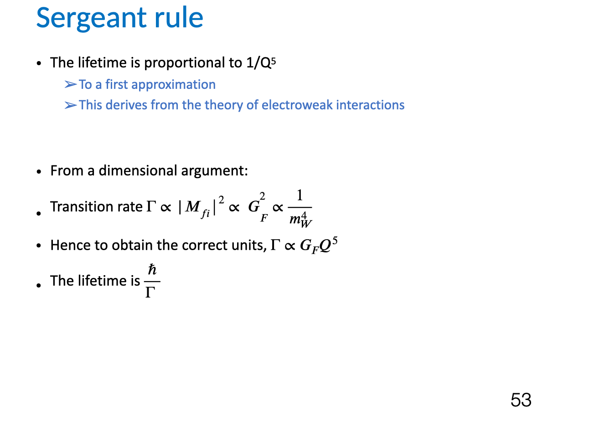
Fermi Theory#
Fermi Theory results in an equation for dn/dE given as:
Here we have V as the volume of the nucleus and \( T_e (p_e) \) is the energy (momentum) of the electron. \( T_{max} \) is the maximum energy that the electron can have. Note that at this energy the neutrino must have zero energy and that \( T_{max} \) is equivalent to the Q of the reaction.
Putting this into the equation for \( W_{fi} \) and just noting that \( P(p_e) \) is equivalent to the number rate of events or intensity \( N(P_e) \) we see most things are constants and we can say:
Note here how the function vanishes at the point when \( T_e = T_{max} \). This is called the Beta Decay Endpoint. This Endpoint is the subject of much research in physics because everything we have stated so far assumes the neutrino has no mass. If this is not the case then the Endpoint will shift slightly.
A better way to study this Endpoint has been developed, called the Fermi-Kurie Plot. This simply rearranges the equation noting that:
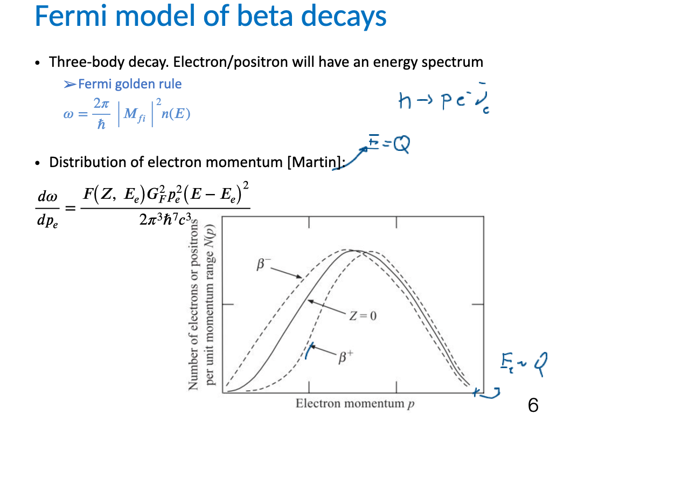
Summary#
In this unit we’ve discussed the final dominant radioactive decay channels and the effect these can have on the nucleon content of a nucleus, and the various factors that need to be considered when trying to calculate their probability and daughter product kinetic energies.
In the next half of this course we’ll start to look at different possible reactions with nuclei in more detail before looking at how knowledge of nuclear structure and decays can be used in applied physics.